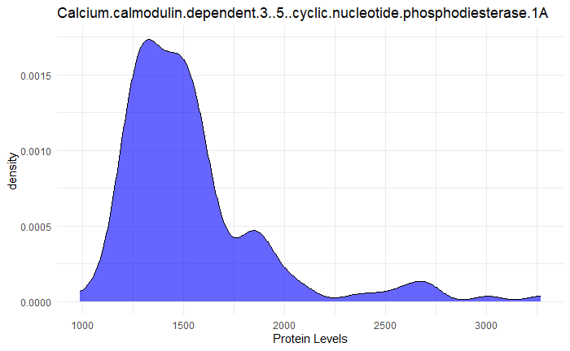

flowchart TB A[1125 proteins] -->|t-test| B(top-10 proteins with the lowest adjusted p-values) --> |The overlapped proteins|D[MAPK14, IgD, DERM, EPHB2, suPAR] A --> |random forest|C(top-10 proteins with highest importance) --> |The overlapped proteins|D --> |Logistic regression|E[AUC = 0.86] F(4 additional proteins) -.-> |enhance predictive power|E
Biomarkers of ASD
Module-1 Group 4
Abstract
The analysis involved exploring protein levels in ASD and TD groups, testing various methodological approaches. First, raw protein distributions were log-transformed to address skewness and improve normality, making visualizations clearer. Outlier trimming showed that TD subjects had more outliers on average compared to ASD. Task 3 introduced different feature selection methods, including partitioning data, expanding the number of predictive proteins to 16 and using a fuzzy intersection combining t-test and Random Forest ranks. These changes impacted model accuracy, sensitivity, specificity, and area under the ROC. Additionally, using Lasso regression for feature selection yielded a simplified model with three key proteins—DERM, IgD, and FSTL1—achieving improved accuracy, sensitivity, and specificity over the previous analysis.
Dataset
The data used in this study was obtained from voluntary participants who provided blood samples for analysis. A total of 154 male children were included in the study, with 76 boys diagnosed with ASD and 78 boys who were considered typically developed. The mean age in the group was 5.7 years old, and the most common ethnicity was White, though other ethnicities included were African American, Asian American, and Hispanic, among others. Demographic data about the participants was also collected surrounding any prevailing clinical conditions and medications being used. A total of 1,317 proteins were measured from the blood samples obtained, but 192 of those proteins were not considered suitable and were dropped from the analysis, leaving 1,125 proteins included in the study. The protein data was normalized by a log10 transform and a z transform, with any observations that exceeded a +3 or a -3 value after the z transformation being dropped as outliers.
Summary of published analysis
Serum samples from boys with ASD and typically developing (TD) controls were analyzed using the SOMAScan™ platform, measuring 1,125 proteins after quality control. The methodology involved three primary statistical approaches to identify potential biomarkers: Random Forest (RF), t-tests, and correlation analysis with ADOS scores, a measure of ASD severity.
In the Random Forest method, feature importance scores were calculated to determine the most relevant proteins for distinguishing ASD from TD. The t-tests compared protein levels between the two groups to identify significant differences, while the correlation analysis sought proteins associated with ASD severity. The study combined the three methods by identifying the top 10 predictive proteins from each and cross-comparing them to find overlapping proteins consistently showing high importance. Five proteins were identified as a core set, and an additional 13 proteins were tested one by one to see if they increased the predictive value of the AUC using logistic regression. The classifier’s performance was evaluated with repeated random splits of training and testing data.
The five core proteins are: mitogen-activated protein kinase 14 (MAPK14), immunoglobulin D (IgD), dermatopontin (DERM), ephrin type-B receptor 2 (EPHB2), and soluble urokinase-type plasminogen activator receptor (suPAR). Four additional proteins—receptor tyrosine kinase-like orphan receptor 1 (ROR1), platelet receptor Gl24 (GI24), eukaryotic translation initiation factor 4H (elF-4H), and arylsulfatase B (ARSB)—were selected to enhance predictive power. The final classifier, comprising these nine proteins, achieved an estimated accuracy with an area under the receiver operating characteristic curve (AUC) of 0.86, indicating strong discriminating ability for identifying ASD.
Findings
Impact of preprocessing and outliers
Task 1
Below are three randomly selected proteins from our raw data, and the distributions that they follow. We can see below that the distributions of these protein levels are quite skewed. By applying a log transformation to the values, it compresses the data and typically makes data more normally distributed. It also makes visualizations easier to read with the smaller numbers.

Task 2
For task 2, we temporarily removed the outlier trimming from preprocessing and looked at the number of outliers per subject. We found that out of the 5 subjects with the highest number of outliers, 3 of them were from the Typically developed group. After finding this, we wanted to check the mean number of protein value outliers by group and found that on average a subject in group TD had 22.78 outlier values while the ASD group had on average 18.36 outliers.

Methodological variations
Task 3
Analysis on a training partition:
Using our training data, the t-tests for identifying significant proteins revealed some shifts in the top-ranked proteins compared to the in-class version. Specifically, four out of the top ten proteins changed, from Calcineurin, IgD, PTN, and FSTL1 to TGF-b R III, OMD, Aldolase A, and P-Cadherin. When comparing the top-ranked proteins between the complete cleaned dataset and the training set using random forest method, only three proteins—DERM, TSP4, and MRC2—remained consistently among the top ten. For logistic regression, the sensitivity, accuracy, and AUROC metrics were lower with the training set, indicating a reduced performance in distinguishing ASD from TD cases.
Larger Number of top predictive proteins using each selection method:
After increasing the number of top predictive proteins from 10 to 16, we observed improvement in the model’s performance metrics. The accuracy of the model increased from 0.774 to 0.81, indicating that the model became better at correctly classifying instances of both ASD and typically developing controls as more predictive proteins were included in the analysis. The area under the curve (AUC) decreased slightly from 0.883 to 0.875, indicating a minimal reduction in the model’s ability to discriminate between positive and negative cases overall. Sensitivity remained constant at 0.812, meaning the model’s ability to correctly identify positive cases did not change. Lastly, specificity had a notable increase from 0.733 to 0.8, suggesting a reduction in false positives. Overall, the model’s modifications improved specificity and accuracy. Despite a slight AUC decline, the balance between sensitivity and specificity indicates fewer errors in identifying typically developing individuals as having ASD.
Fuzzy Intersection:
We ranked the proteins based on both t-test significance and random forest importance, resulting in a more balanced selection of predictive features. Unlike a strict intersection, which only retains proteins show in both methods, the fuzzy approach allows moderately important proteins from either method to be included, creating a more inclusive set of features. Specifically, we ranked proteins from the t-test by ascending adjusted p-value and those from the Random Forest model by descending MeanDecreaseGini. We then selected the top 10 proteins based on a combined rank from both methods.
Using this fuzzy intersection, we selected the top 10 proteins for the logistic regression model to classify ASD and TD groups. The final performance metrics are accuracy = 0.839, sensitivity = 0.812, specificity = 0.812, and area under the ROC = 0.921 Since the ROC_AUC with our fuzzy intersection is closer to 1 compared with the one in inclass analysis, our intersection gives us better model performance.
Improved classifier
We experiemented with a new approach where we used a Lasso regression to select the important proteins instead of the Random Forest method. We fit binomial Lasso model with alpha = 1 and 10 cross-validation folds. After fitting the model, we examined the coefficients for each protein and identified the ten with the largest absolute values, marking them as the most influential based on their strong association with the outcome. These were the proteins that the Lasso model demend to be the most important. Then, we took the common proteins between the multiple t-test and the ten from our lasso model for our final panel. We ended with a simpler model of 3 proteins that was comparable to the class-analysis: DERM, IgD, and FSTL1. This gave us an accuracy of 83.9%, Sensitivity = 87.5%, Specificity = 80%, Area under the ROC = 0.879.